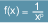
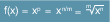
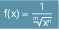

Mit der vordefinierten Funktion POT() ist es möglich, für einen Eingabewert eine beliebige Potenz zu berechnen.
POT() ist im NC-Programm und in Synchronaktionen programmierbar.
Syntax
NC-Programm:
POT(<x>,[<p>])
Synchronaktion:
DO POT(<x>,[<p>])
Bedeutung
POT()
| Funktionsaufruf zum Berechnen einer Potenz |
<x>
| Parameter 1: Eingabewert (Basis der Potenzfunktion) |
Typ: | REAL |
<p>
| Parameter 2 (optional): Exponent der Potenzfunktion (≙ Grad der Potenzfunktion) |
Typ: | REAL |
Wert: | p ≥ 0 p ∈ ℕ0 | Im einfachsten Fall ist der Exponent eine nichtnegative ganze Zahl. Die Formel zur Potenzberechnung hat dann folgende Form: |
Einschränkung des Wertebereichs der Basis <x>: Keine |
p ≤ -1 p ∈ ℤ | Bei negativen ganzzahligen Exponenten lässt sich die Formel wie folgt umstellen:  |
Einschränkung des Wertebereichs der Basis <x>: Da eine Division durch 0 nicht zulässig ist, muss bei negativen Exponenten der Wert für die Basis immer ungleich null sein: x ≠ 0 |
p = n/m n/m > 0 n ∈ ℕ0 m ∈ ℕ | Ist der Exponent eine nichtnegative rationale Zahl der Form n/m, dann lässt sich die Formel auch als Wurzelfunktion darstellen:  |
Einschränkung des Wertebereichs der Basis <x>: Da die Wurzel einer negativen Zahl nicht abgebildet werden kann, muss bei Wurzelfunktionen mit ungeraden Exponenten der Wert für die Basis immer größer (oder gleich) null sein: x ≥ 0 bei ungeraden Werten von n |
p = - n/m n/m < 0 n ∈ ℕ0 m ∈ ℕ | Ist der Exponent eine negative rationale Zahl der Form n/m, dann lässt sich die Formel auch als Wurzelfunktion in einem Bruch darstellen:  |
Einschränkung des Wertebereichs der Basis <x>: Da die Wurzel einer negativen Zahl nicht abgebildet werden kann und eine Division durch 0 nicht zulässig ist, muss: bei Wurzelfunktionen im Nenner eines Bruchs und mit ungeraden Exponenten der Wert für die Basis größer null sein: x > 0 bei ungeraden Werten von n bei Wurzelfunktionen im Nenner eines Bruchs und mit geraden Exponenten der Wert für die Basis ungleich null sein: x ≠ 0 bei geraden Werten von n
|
Ohne Angabe eines Exponenten berechnet die Funktion die Potenz vom Grad 2 (Quadratfunktion): POT(<x>) → x2 |
| Hinweis |
Bei der Eingabe der Basis <x> und dem optionalen Exponenten <p> müssen geltende Rechengesetze beachtet werden. Nicht möglich sind z. B. Divisionen durch null oder das Ziehen einer Wurzel mit einer negativen Basis. In solchen Fällen führt der Funktionsaufruf zur Ausgabe eines Alarms. |
Beispiele
Programmsatz | Ergebnis | Anmerkung |
POT(2)
| Rückgabewert = 22 = 4 | Potenz vom Grad 2 zur Basis 2 |
POT(2,3)
| Rückgabewert = 23 = 8 | Potenz vom Grad 3 zur Basis 2 |
POT(0,-1)
| Alarm | Division durch 0 nicht zulässig |
POT(-1,0.5)
| Alarm | Wurzel einer negativen Zahl nicht zulässig |